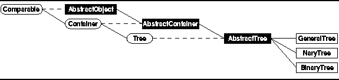

Data Structures and Algorithms
with Object-Oriented Design Patterns in Java
Data Structures and Algorithms
with Object-Oriented Design Patterns in Java
In this section we consider the implementation of trees
including general trees, N-ary trees, and binary trees.
The implementations presented have been developed in the context
of the abstract data type framework presented in Chapter  .
That is, the various types of trees are viewed
as classes of containers
as shown in Figure .
.
That is, the various types of trees are viewed
as classes of containers
as shown in Figure .

Figure: Object class hierarchy
Program defines the Tree interface.
The Tree interface extends the Container interface
defined in Program .
The Tree interface adds the following methods to those inherited from the Container interface:
).
Both of these methods perform a traversal.
That is, all the nodes of the tree are visited systematically.
The former takes a PrePostVisitor
and the latter takes a Visitor.
When a node is visited,
the appropriate methods of the visitor are applied to that node.
 Copyright © 1998 by Bruno R. Preiss, P.Eng. All rights reserved.
Copyright © 1998 by Bruno R. Preiss, P.Eng. All rights reserved.